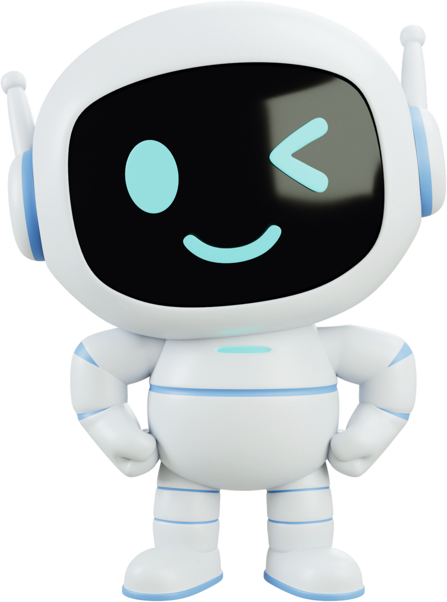
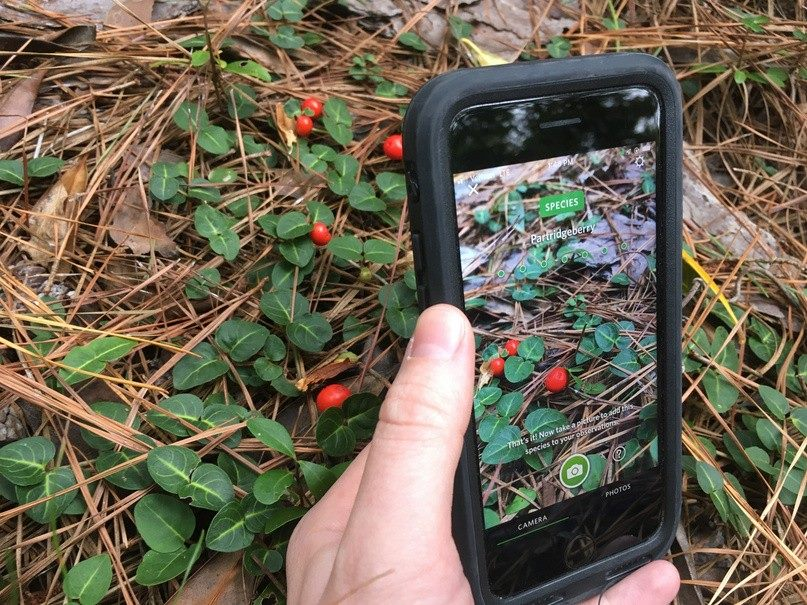
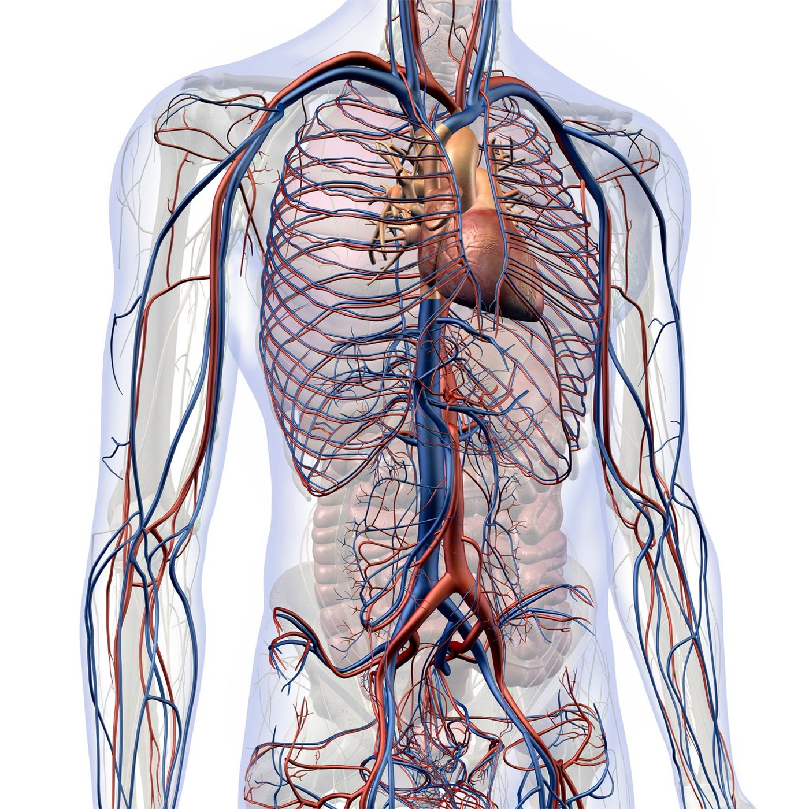
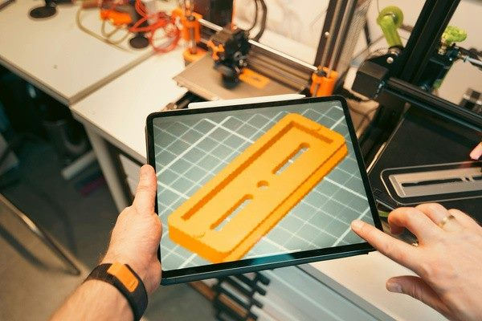
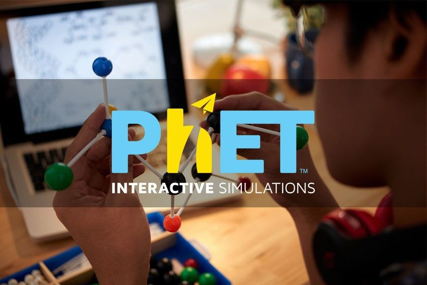
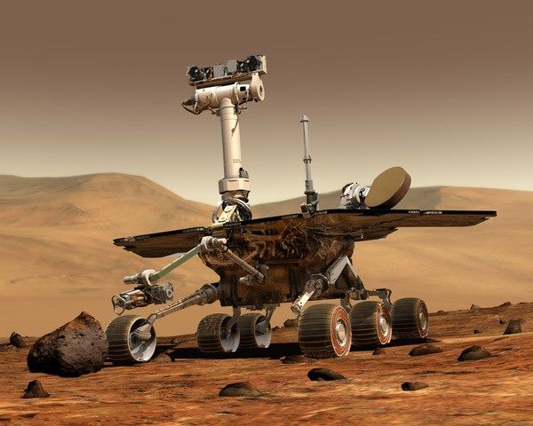
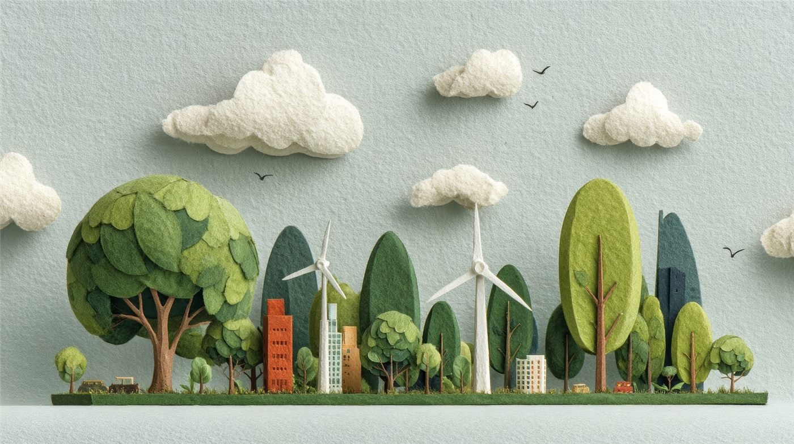
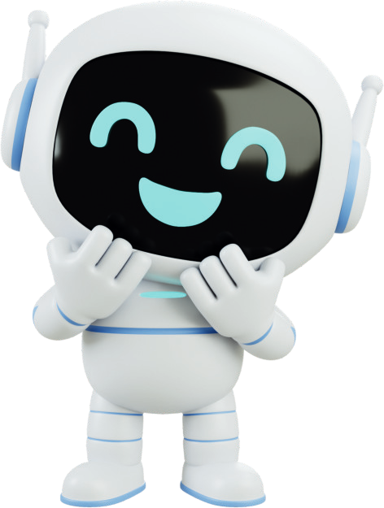
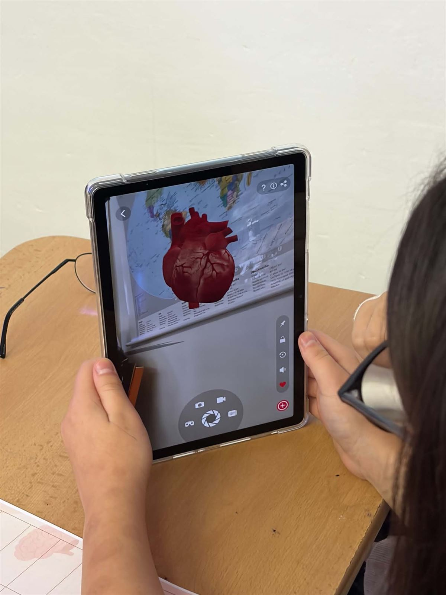

Moderní technologie ve výuce? Ukážeme vám, jak na to.
Proměňte roboty, tablety, 3D tisk i umělou inteligenci v hodiny, které žáky baví a dávají smysl.

Máte moderní pomůcky. Víte, jak je využít?
Technika ve škole je jen začátek. Programy Mobilní učebny ukazují, jak ji zapojit do běžné výuky tak, aby naplňovala vzdělávací cíle.
Robotické stavebnice leží ve skříni a nikdo neví, jak s nimi začít.
Žáci sestaví robota, naprogramují ho a změří, jak se pohybuje. Fyzika, matematika a informatika v jedné hodině.
Program Chytrá robotika →Tablety slouží hlavně k testům a hledání na internetu.
S aplikací Seek žáci v terénu určují rostliny a živočichy a pracují s daty jako skuteční badatelé.
Program Digitální badatel →Žáci přebírají informace z internetu i od AI bez ověřování.
Jako digitální detektivové rozpoznávají manipulovaný obsah a učí se ověřovat informace z více zdrojů.
Program AI detektiv →Geometrie v prostoru je pro žáky abstraktní a těžko představitelná.
V Tinkercadu navrhují vlastní 3D modely a počítají rozměry a objemy na tom, co sami vytvořili.
Program Kreativní inženýr →Na pokusy chybí laboratoř, pomůcky nebo čas.
Interaktivní simulace PhET umožní experimentovat, testovat hypotézy a vyhodnocovat výsledky přímo ve třídě.
Program Virtuální laboratoř →Lidské tělo znají žáci jen z obrázků v učebnici.
Díky rozšířené realitě si prohlédnou srdce, plíce či mozek ve 3D přímo v prostoru třídy.
Program Digitální anatomie →Osm programů, osm světů
Každý program trvá 90 minut, staví na jedné hlavní technologii a navazuje na školní předměty. Rozklikněte program a zjistěte, co se žáci naučí.

Digitální badatel
Pomocí aplikace Seek žáci identifikují život kolem sebe a pochopí, jak technologie pomáhá vědě.
Předměty: Biologie, Geografie, Informatika

Digitální anatomie
Díky rozšířené realitě uvidíte srdce, plíce či mozek přímo před sebou v prostoru třídy.
Předměty: Biologie, Informatika

Kreativní inženýr
Žáci se naučí pracovat v profesionálním digitálním prostředí a navrhnou vlastní 3D objekty.
Předměty: Informatika, Matematika, Fyzika

Virtuální laboratoř
Objevte, jak funguje chemie a fyzika, pomocí interaktivních simulací a vlastních pokusů.
Předměty: Chemie, Fyzika, Matematika, Informatika
Chytrá robotika
Sestavte robota a prozkoumejte, jak pracuje s daty. Robotika a fyzika s LEGO® SPIKE™ Prime.
Předměty: Informatika, Fyzika, Matematika
AI detektiv
Pomocí AI nástrojů budete odhalovat stopy, analyzovat informace a řešit digitální záhady.
Předměty: Informatika, Dějepis

Vesmírný inženýr
Navrhnete vlastní technologii pro život na Marsu a vytvoříte její prototyp.
Předměty: Fyzika, Informatika, Matematika, Geografie

AI urbanista
Prozkoumáte reálné místo ve svém městě a navrhnete, jak by mohlo být lepší pro lidi, přírodu i dopravu.
Předměty: Geografie, Informatika, Dějepis
Co získáte jako učitel
Ke každému programu v projektu vznikly materiály, které vám pomohou připravit a vést hodinu i bez mobilní učebny.
Metodiky a scénáře hodin
Podrobný průběh výuky krok za krokem: cíle, pomůcky, časový plán a úkoly pro žáky.
Pracovní listy
Úkolové a pracovní listy pro žáky základních i středních škol, připravené k tisku.
Vzdělávací cíle a výstupy
Ke každému programu cíl, očekávaný výstup žáka a rozvíjené kompetence.
Vazby na předměty
Přehled, které předměty a témata RVP jednotlivé programy rozvíjejí.
Hodnocení a diplomy
Hodnoticí arch a diplomy pro žáky v úrovních Začátečník a Expert.
Inspirace z praxe
Zkušenosti z desítek workshopů ve školách a na letních akcích v Česku i na Slovensku.
Navazující vzdělávání pro pedagogy
Metodiky a materiály ke všem programům zpřístupníme prostřednictvím samostatného e-learningu pro učitele. E-learning a registrace do něj se připravují. Jakmile budou spuštěny, najdete je na stránce Pro učitele.

Jak vznikla Mobilní učebna KONEKT-ED?
Menší školy v pohraničí často nemají vybavení ani prostor pro výuku robotiky, programování nebo virtuální reality. Projekt jim proto moderní technologie přivezl.
- Proč vznikl: aby žáci v menších školách na obou stranách hranice měli stejný přístup k moderní výuce jako ve velkých městech.
- Jak pomáhal: vybavená mobilní učebna se přesouvala mezi školami a workshopy vedli lektoři s technickou podporou.
- Co vzniklo: 12 vzdělávacích okruhů, obsahové balíčky, metodiky a pracovní listy pro osm programů.
- Jak dál: výsledky projektu mohou učitelé využívat ve vlastní výuce i bez mobilní učebny.

Co jsme v projektu realizovali


Mobilná učebňa KONEKT-ED: Edukácia prepájajúca pohraničie
Projekt realizovaly Sdružení měst a obcí Východní Moravy a Trnavské umenovedné centrum. Je podpořen z programu Interreg Slovensko – Česko 2021–2027.
- Kód projektu
- 403401DXX8
- Doba realizace
- 1. 7. 2024 – 1. 6. 2026
Přineste moderní technologie do své výuky.
Prozkoumejte vzdělávací programy a zjistěte, jak s nimi pracovat ve své třídě.